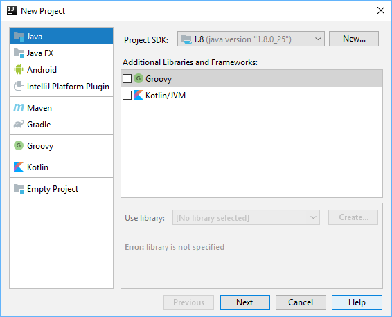
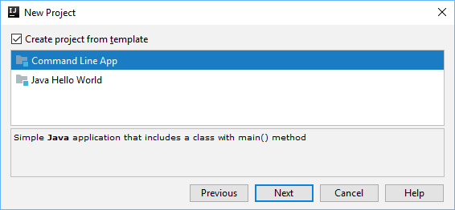

L'objectiu d'aquest CodeLab és practicar les operacions booleanes i la conversió de tipus.
Realitzarem una Calculadora d'operacions lògiques binaries.
Inicia IntelliJ i crea un nou projecte de tipus

Selecciona la plantilla

Posa-li el nom

Fes clic-dreta sobre el package "
En el diàleg "New GUI Form" introdueix les següents dades:
Un cop creat el GUIForm, s'obrirà l'entorn gràfic de disseny:
Aquest entorn permet arrossegar i soltar components al formulari. Hi podem veure tres seccions:
Component Tree - mostra la vista jeràrquica dels components que s'han afegit al formulari. Per a cada component permet definir les seves propietats (Property | Value)Design area - la vista gràfica del formulari. Els components s'afegeixen arrossegant-los en aquesta àreaPalette - conté tots els components disponibles que es poden afegir al formulari
Visualitzador de resultats
Arrossega un
Aquest camp de text és el que utilitzarem com a display o pantalla de la calculadora.
Botons
Afegeix els components
Estableix les següents propietats als botons:
Button1:
Button2:
Button3:
Button4:
Button5:
Button6:
Pots veure una previsualització de l'aspecte del Formulari fent clic-dreta sobre el disseny i selecionant
Establir el nom del JPanel
Com a pas previ, per a fer funcionar el formulari es requereix establir el camp
Selecciona el
Si fas clic sobre l'arxiu
Calculadora.java
package com.company; import javax.swing.*; public class Calculadora { private JTextField display; private JButton ACButton; private JButton NOTButton; private JButton ORButton; private JButton ANDButton; private JButton a0Button; private JButton a1Button; private JPanel calcView; }
Per tal de fer que el formulari funcioni es requereix crear un
A l'editor de codi de l'arxiu
Ara ja es pot executar el mètode
Per respondre als clics dels botons i realitzar les operacions, cal afegir un Listener a cadascun d'ells. El Listener és l'acció que s'executa quan es fa clic al botó.
Afegeix un Listener a cada botó fent click-dreta sobre ells i seleccionant
Després d'afegir un
Calculadora.java
public Calculadora() { ACButton.addActionListener(new ActionListener() { @Override public void actionPerformed(ActionEvent e) { } }); NOTButton.addActionListener(new ActionListener() { @Override public void actionPerformed(ActionEvent e) { } }); ORButton.addActionListener(new ActionListener() { @Override public void actionPerformed(ActionEvent e) { } }); ANDButton.addActionListener(new ActionListener() { @Override public void actionPerformed(ActionEvent e) { } }); a0Button.addActionListener(new ActionListener() { @Override public void actionPerformed(ActionEvent e) { } }); a1Button.addActionListener(new ActionListener() { @Override public void actionPerformed(ActionEvent e) { } }); eqButton.addActionListener(new ActionListener() { @Override public void actionPerformed(ActionEvent e) { } }); }
El codi que escrivim a cadascun dels mètodes
La memòria de la calculadora
El pas següent és realitzar les operacions binàries seleccionades per l'usuari.
Crearem dues variables de tipus
private String operand1 = "", operand2 = ""; private char operator = ' ';
És a dir, cada cop que l'usuari pitji els botons
Quan l'usuari pitji el botó
Quan es pitji el boto del resultat eqButton només caldrà realitzar la operació indicada en la variable
Quan es pitji el botó
El botó ACButton és el més senzill de tots, únicament borra la memòria (
Botons 0 i 1
L'acció a prendre quan es fa clic als botons 0 i 1, és afegir un
a0Button.addActionListener(new ActionListener() { @Override public void actionPerformed(ActionEvent e) { operand1 += 0; display.setText(operand1); } }); a1Button.addActionListener(new ActionListener() { @Override public void actionPerformed(ActionEvent e) { operand1 += 1; display.setText(operand1); } });
Botó NOT
El
NOTButton.addActionListener(new ActionListener() { @Override public void actionPerformed(ActionEvent e) { int decimal = Integer.parseInt(operand1, 2); int result = ~decimal; display.setText(Integer.toBinaryString(result)); } });
Amb aquesta sentència:
convertim l'String que tenim a la variable
És a dir, si la variable
A continuació realitzem la operació NOT (
Finalment tornem a convertir el resultat d'aquesta operació que tenim a la variable
Botons OR i AND
Aquests botons emmagatzemen el valor del display com a
ORButton.addActionListener(new ActionListener() { @Override public void actionPerformed(ActionEvent e) { operator = '|'; operand2 = operand1; operand1 = ""; display.setText(""); } }); ANDButton.addActionListener(new ActionListener() { @Override public void actionPerformed(ActionEvent e) { operator = '&'; operand2 = operand1; operand1 = ""; display.setText(""); } });
Botó resultat
El botó resultat realitza la operació establerta en la variable
eqButton.addActionListener(new ActionListener() { @Override public void actionPerformed(ActionEvent e) { int decimal1 = Integer.parseInt(operand1, 2); int decimal2 = Integer.parseInt(operand2, 2); int result = operator == '&' ? decimal1 & decimal2 : decimal1 | decimal2; display.setText(Integer.toBinaryString(result)); } });
Botó AC
El botó AC reseteja el valor de les variables
ACButton.addActionListener(new ActionListener() { @Override public void actionPerformed(ActionEvent e) { operand1 = ""; operand2 = ""; display.setText(""); } });